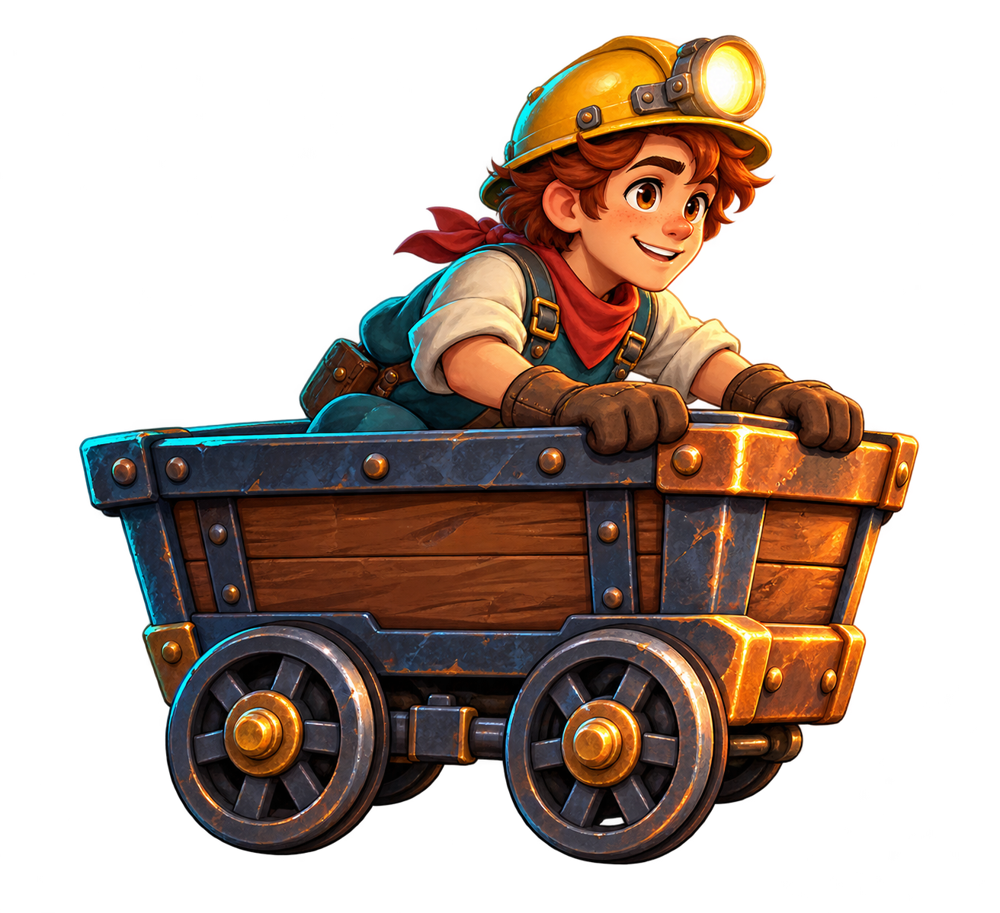

EPISODE 01 · 잊혀진 수정 광산
마지막 선로를
따라, 빛으로.
어둠 속에서 눈을 뜬 작은 광부.
출구를 찾을 열쇠는 당신의 계산과 순발력.
깊이 2,000 m
작은 불빛 하나면 충분해.
SPACE 점프 ↓ 누르고 숙이기PC · 태블릿 지원 ✦ 매번 달라지는 수학 관문

루미광산 탐험가
RAIL JUNCTION 01
탐험가의 설계도
선로를 선택하세요
정답이면 앞으로. 오답이면 이 구간부터 다시.
태블릿을 가로로 돌리면 더 넓게 보여요.